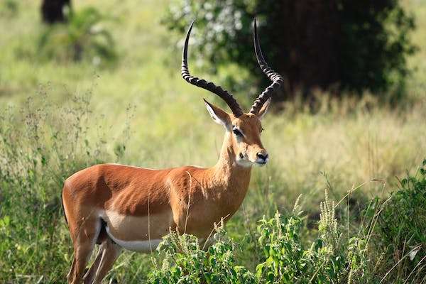
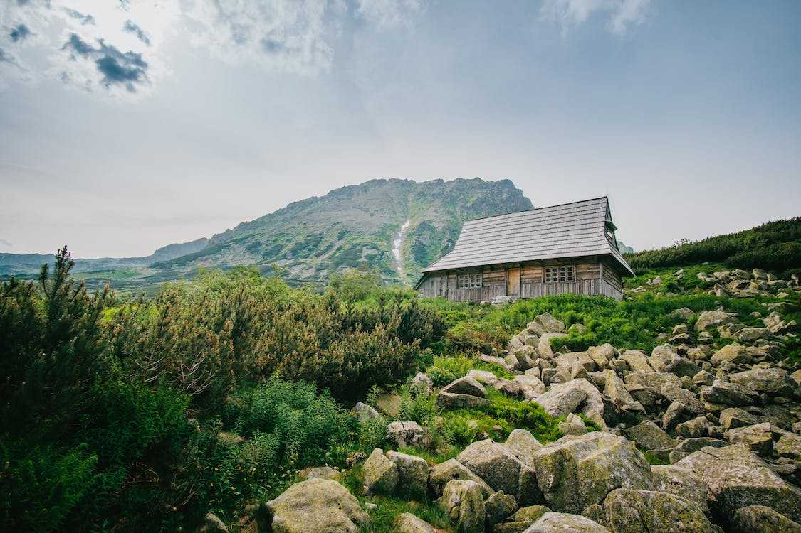

It is a naturally created lake because of a landslide and unlike the misnomer name suggests, it is a perfect place for a family outing. It is one of the mandatory places to visit in Ooty on your trip here if you are a nature lover. Although it is located 28 Km away from Ooty, the distance is worth covering as it offers an opportunity to do trout fishing, activities like trekking and camping.
Also, you can spend the night here because everything here is perfect to pitch tents. Apart from activities nature has painted this place so well with flowers and everything beautiful.
Location: 28 km from Ooty
Timings: 8 AM to 6 PM
Avalanche Lake

This is one of the best places to visit in Ooty, if you are a wildlife enthusiast. The park does full justice to its name as there are different varieties of deer found within its boundaries, such as Chital Deer and Sambhal Deer. However, the deer park is also home to a large number of wild animals, such as rabbits, hares, and birds.
You can also go for a stroll near Ooty Lake which is located quite close to the Park. This popular site in Ooty is also home to a number of flora and fauna. There are also a large number of hotels and resorts near the Park, in case you are looking for a longer stay.
Location: Near Ooty Lake
Timings: 10 AM to 5 PM
Deer Park

A lovely spot for trekking, Doddabetta Peak is one of the major attractions in Ooty. This peak offers you breathtaking views from the top and is the highest peak in the Nilgiris. Located at an altitude of 2,623 metres, this peak lies at the junction of western and eastern ghats, around 10 kms away from Ooty.
The rich flora and fauna around this area adds to the charm of this place and if you are interested to take a closer look, there is a telescope house with two telescopes at the peak, which offers you an opportunity to look at the lovely valley around. Adventure lovers will love this place since it offers a good trekking trail.
Location: Ooty-Kotagiri Road in the Nilgiris District of Tamil Nadu, India
Timings: 9:00 AM - 6:30 PM
Doddabetta Peak
About 14 km from Ooty, Kalhasti waterfall is another name for this place. It lies in Kalhatty village, water graciously descends down from a height of 120-122 feet. You're going to spot a wide variety of hill birds. Wildlife here includes Panthers, Bisons, Wild Buffaloes, Wild Dogs, Spotted Deers, Sambars and monkeys.
Also, it is a house of various spices like cinnamon, cloves, rosemary, sandalwood, pepper, and rosewood. It is one of the Ooty famous places and also perfect places for trekking in Ooty. Kalhatty Hills are going to a lot to your beautiful memories from Ooty.
Location: Ooty-Mysore Road
Timings: 06:00 AM to 10:00 PM